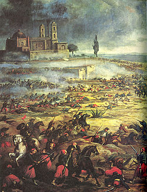
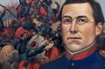

BATALLA DEL 5 DE MAYO DE 1862

Aplicacion dos
MARIA MERCEDES DE LA LUZ
TEMA 1
LA BATALLA
Información acerca de la batalla
La Segunda intervencion francesa en Mexico
fue un conflicto armado entre Mexico y Francia entre 1862 y 1867.
Tuvo lugar despues de que el gobierno mexicano,
encabezado por Benito Juarez,
anunciara la suspension de los pagos de la deuda externa en 1861.
Asegurado el paso de Acultzingo, el 2 de mayo de 1862 la columna principal del ejército expedicionario francés salió de San Agustín del Palmar, en Veracruz, para cruzar la Sierra Madre Oriental y dirigirse hacia Puebla, paso obligado para llegar a la capital del país y que era además uno de los bastiones del Partido Conservador, donde esperaban ser recibidos "con una lluvia de rosas", como le aseguró Saligny a Napoleón III en una carta.4 El 3 de mayo por la noche, el general Zaragoza arribó a Puebla, dejando en su retaguardia una brigada de caballería para hostigar a los invasores. Los efectivos del Ejército de Oriente se organizaron por las calles desiertas de la ciudad, ya que la mayoría de la población era partidaria de la invasión.
Aplicacion dos
MARIA MERCEDES DE LA LUZ
SUBTEMA 1.1
FUERTE DE LORETO
El centro de la línea lo ocuparon Felipe Berriózabal y Francisco Lamadrid con las tropas del Estado de México y San Luis Potosí. La izquierda se apoyó en el cerro de Acueyametepec ubicado en el norte de la ciudad y en cuya cumbre se ubicaban los Fuertes de Loreto y Guadalupe, con el general Miguel Negrete a la cabeza de la Segunda División de Infantería. La artillería sobrante la colocaron en los fortines y reductos dentro de Puebla, quedando al mando del general Santiago Tapia,
A las 9:15 de la mañana del 5 de mayo, los franceses aparecieron en el horizonte, avanzando desde la cercana Hacienda de Rementería, cruzando fuego con las guerrillas de caballería que se batían en retirada y que no se replegaron hasta que las líneas francesas estuvieron formadas y listas para avanzar.
Los franceses, apoyados por el 1.er. y 2o. Regimientos de Infantería de Marina, se abalanzaron sobre el resto de la línea mexicana, siendo recibidos con la bayoneta. La columna francesa fue rechazada en Guadalupe y Loreto, siendo igualmente repelidos los ataques de otras columnas francesas desplegadas.
retiraron sus fuerzas el 9 de abril. En mayo, los franceses bloquearon Mazatlan por unos dias.
. En Loreto había un cañón de 68 libras que causaba enormes estragos en la filas francesas. Los zuavos hicieron una carga de infantería desesperada para apoderarse de esa pieza.
. El artillero mexicano, sorprendido por la rapidez de los franceses, tenía en sus manos la bala de cañón que no alcanzó a colocar en la boca de fuego. Un zuavo apareció frente a él y tras éste el resto del cuerpo que, una vez apoderados de ese fortín, levantarían la moral francesa y podría perderse la victoria conseguida.
El dia 4 de mayo de 1862, partio muy temprano de Puebla el general Tomas O-Horan rumbo a Atlixco con un batallon de 850 hombres;
a las nueve de la manana almuerzan en Cholula y continuan su camino hacia el pueblo de San Gregorio Atzompa donde se encuentran con jinetes reaccionarios del general Leonardo Marquez realizando un enfrentamiento donde estos emprenden la retirada,
continua la marcha pasando por los ranchos de Santa Ana Acozautla y los Molinos;
finalmente al llegar a Atlixco enfrentan a Marquez obligandolo a retirarse hacia los rumbos de Izucar de Matamoros dejando este,
abandonadas piezas de artilleria y otro pertrechos; ese mismo dia el general O-Horan rinde el parte correspondiente al general Ignacio Zaragoza y al mismo tiempo al general Santiago Tapia, gobernador y comandante militar de Puebla.
SUBTEMA 1.2
FUERTE DE GUADALUPE
. La batalla se inició en forma a las 11:15 de la mañana, anunciándose con un cañonazo desde el Fuerte de Guadalupe y acompañado por los repiques de las campanas de la ciudad. En ese momento se dio una maniobra sorpresiva: la columna francesa, que venía avanzando en orden de oriente a poniente, se dividió en dos: la primera, compuesta por aproximadamente 4000 hombres y protegida con su artillería, dio un violento viraje hacia la derecha y se dirigió hacia los fuertes; mientras que la segunda columna, compuesta por el resto de la infantería, quedó como reserva.
Los conservadores Almonte y Antonio de Haro y Tamariz, que acompañaban a los franceses, habían sugerido que el ataque se dirigiera a las inmediaciones del ex Convento del Carmen, en el sur de la ciudad, tomando como antecedente lo que sucedió en el sitio durante la Guerra con Estados Unidos.
La línea de batalla mexicana formó un ángulo que se extendió desde Guadalupe hasta un sitio conocido como Plaza de Román, frente a las posiciones enemigas. Zaragoza dispuso que el general Lamadrid defendiera con las tropas potosinas y dos piezas de artillería el camino que conectaba a la ciudad con la garita de Amozoc. La derecha de la línea de batalla mexicana la cerró Porfirio Díaz con la División de Oaxaca, auxiliado por los escuadrones de Lanceros de Toluca y Oaxaca.
Los franceses continuaron su avance, colocando sus baterías frente a Guadalupe, al tiempo que devolvían el fuego mexicano proveniente de esa posición.
Zaragoza contaba con solo (2,000) dos mil hombres.
En ese momento los zuavos, el regimiento de élite de la infantería francesa, iniciaron su ascenso por el cerro hacia Guadalupe, perdiéndose de la vista de los fusileros mexicanos. De repente, aparecieron disparando frente a la fortificación. Sin embargo, el fuego lanzado por los mexicanos los detuvo en seco. En ese instante, los soldados de Berriozábal los recibieron con sus bayonetas, por lo que tuvieron que retirarse en buen orden hasta ponerse fuera de tiro. Se repusieron rápidamente y se lanzaron de nuevo intentando tomar el fuerte.
TEMA 2
ANTECEDENTES
ANTECEDENTES DE LA BATALLA
En octubre de 1861, Francia, Inglaterra y España suscribieron la Convención de Londres, en la cual se comprometieron a enviar contingentes militares a México para reclamar sus derechos como acreedores por una deuda que ascendía alrededor de 80 millones de pesos, aproximadamente eran 69 millones para los ingleses, 9 millones para los españoles y 2 millones para Francia.
• Reino Unido: 700 marines bajo el comando del Comodoro Dunlop.2
Poco después de reunirse, los representantes de los tres países enviaron un ultimátum al gobierno mexicano en el que pedían el pago de sus deudas; de lo contrario, invadirían el país. Juárez, quien gobernaba a un país que apenas empezaba a levantarse de la postración económica, respondió con un exhorto a lograr un arreglo amistoso, y los invitó a conferenciar. Acompañó ese mensaje con la derogación del decreto que suspendió los pagos.

Aplicacion dos
MARIA MERCEDES DE LA LUZ
SUBTEMA 2.1
CONVENCION EN LONDRES
1861
En octubre de 1861, Francia, Inglaterra y España suscribieron la Convención de Londres, en la cual se comprometieron a enviar contingentes militares a México para reclamar sus derechos como acreedores por una deuda que ascendía alrededor de 80 millones de pesos, aproximadamente eran 69 millones para los ingleses, 9 millones para los españoles y 2 millones para Francia.
Poco después de reunirse, los representantes de los tres países enviaron un ultimátum al gobierno mexicano en el que pedían el pago de sus deudas; de lo contrario, invadirían el país. Juárez, quien gobernaba a un país que apenas empezaba a levantarse de la postración económica, respondió con un exhorto a lograr un arreglo amistoso, y los invitó a conferenciar
Acompañó ese mensaje con la derogación del decreto que suspendió los pagos. Al mismo tiempo, en vista de la posibilidad real de una invasión militar que buscara llegar hasta la Ciudad de México, ordenó el traslado de pertrechos y la fortificación de Puebla, así como crear una unidad, a la que se designó como Ejército de Oriente, que fue puesta bajo el mando del general José López Uraga.
En vista del desempeño deficiente de este mando, fue destituido y en su lugar se designó a Zaragoza, quien dejó el Ministerio de Guerra y se dirigió a Puebla para organizar la oposición al avance francés con cerca de 10,000 hombres; cantidad mínima si se toma en cuenta el vasto territorio que debía cubrirse.

SUBTEMA 2.2
Tratados de La Soledad
febrero de 1862 ,
Los representantes aceptaron el llamado y en febrero de 1862 se reunieron con los ministros juaristas del Exterior, Manuel Doblado, y de Guerra, Ignacio Zaragoza, en la hacienda de La Soledad, cerca de Veracruz.
Gracias a la habilidad como negociador de Doblado se firmaron los Tratados preliminares de La Soledad, en los que se obtuvo el reconocimiento como interlocutor para el gobierno de Juárez y se garantizó el respeto a la integridad e independencia del país. Además, se convino que las negociaciones sobre la deuda se realizaran en Orizaba, donde se establecerían las fuerzas aliadas, además de Córdoba y Tehuacán, para evitar el rigor del clima tropical del puerto; si no se llegaba a un acuerdo, se retirarían a la costa para así comenzar las hostilidades.
El 5 de marzo, cuando aún se realizaban las negociaciones en Orizaba, llegó a Veracruz un contingente militar francés bajo el mando de Charles Ferdinand Latrille, conde de Lorencez, quien relevó en el mando a Jurien de la Gravière y se dirigió a Tehuacán. También llegó el general conservador Juan Nepomuceno Almonte, quien de inmediato se proclamó "jefe supremo de la nación" y empezó a reunir a las tropas conservadoras, remanentes de la Guerra de Reforma, para apoyar a los franceses.

TEMA 3
CONSECUENCIAS
CONSECUENCIAS SUFRIDAS DESPUES DE LA BATALLA
Mientras se libraba la batalla, en el Palacio Nacional y en la Ciudad de México en general se vivía un ambiente de tensa espera. Lo último que se sabía de Puebla era el telegrama enviado por Zaragoza hacia las 12:30 del día, en el que avisaba que el fuego de artillería de ambos lados había iniciado. Luego, silencio. Ante la incertidumbre, el gobierno había hecho salir precipitadamente al general Florencio Antillón al mando de los Batallones de Guanajuato, quedando como guardianes de la capital sólo 2,000 hombres del Regimiento de Coraceros Capitalinos y algunos centenares de milicianos pobremente armados. Si las tropas guanajuatenses se perdían, la capital quedaría desprotegida.
Aplicacion dos
MARIA MERCEDES
SUBTEMA 3.1
PARA LOS FRANCESES
El saldo final de la batalla fue de 476 muertos y 345 heridos del lado francés, así como 83 muertos, cerca de 131 heridos y 12 desaparecidos para el Ejército de Oriente. A las 7 de la noche del día 6 de mayo arribaron a Puebla el general Antillón y sus tropas; Zaragoza esperaba un nuevo ataque de Lorencez, pero éste, el día 8 de mayo, dispuso la retirada hasta San Agustín del Palmar, siendo "saludado" por la artillería republicana y la Banda de Guerra de los Carabineros, quienes tocaron "Escape"
El 5 de septiembre de 1862, todavía acuartelado en Puebla, el general Zaragoza contrajo tifo y falleció tres días después.10 Lo sustituyó en el mando del Ejército de Oriente el general Jesús González Ortega, quien se encargaría de la defensa de la ciudad ya que se esperaba el regreso de los franceses, reagrupados y con refuerzos, lo cual sucedió en marzo del siguiente año. Los historiadores concuerdan en señalar el talento de Zaragoza como organizador y motivador de sus tropas
SUBTEMA 3.2
PARA LOS MEXICANOS
El saldo final de la batalla fue de 476 muertos y 345 heridos del lado francés, así como 83 muertos, cerca de 131 heridos y 12 desaparecidos para el Ejército de Oriente. A las 7 de la noche del día 6 de mayo arribaron a Puebla el general Antillón y sus tropas; Zaragoza esperaba un nuevo ataque de Lorencez, pero éste, el día 8 de mayo, dispuso la retirada hasta San Agustín del Palmar, siendo "saludado" por la artillería republicana y la Banda de Guerra de los Carabineros, quienes tocaron "Escape".
Cabe atribuir parte de la responsabilidad en el resultado de la batalla a Lorencez, por decidir lanzarse en primer lugar contra Loreto y Guadalupe en lugar de ir sobre la ciudad. Esta acción no carece de sentido si se toma en cuenta que el general francés se encontraba confiado en la victoria por lo que había sucedido en las Cumbres, además de que bajo la lógica militar de su tiempo, primero había que atacar al enemigo en sus posiciones más fuertes. En todo caso, ensoberbecido por la superioridad per se de los franceses, no contó con la férrea resistencia mexicana y cometió yerros garrafales: así, por ejemplo, fue famosa su orden de colocar sus cañones en batería a dos kilómetros y medio de las fortificaciones poblanas, lo cual fue calificado por el propio Napoleón III como un disparate11 ya que las balas llegaban a sus blancos, pero sin fuerza.
